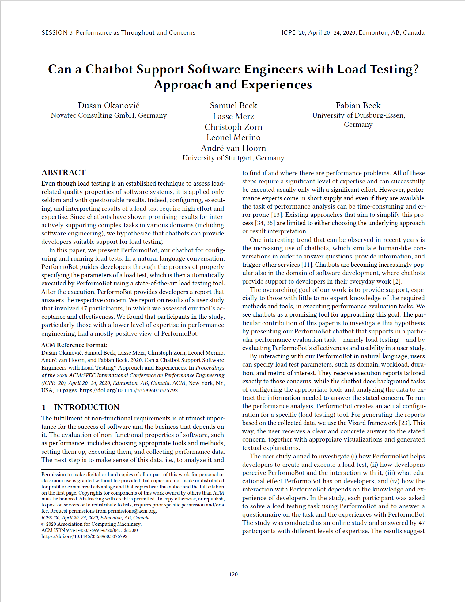

Can a Chatbot Support Software Engineers with Load Testing? Approach and Experiences


Venue. ICPE (2020)
Abstract. Even though load testing is an established technique to assess load-related quality properties of software systems, it is applied only seldom and with questionable results. Indeed, configuring, executing, and interpreting results of a load test require high effort and expertise. Since chatbots have shown promising results for interactively supporting complex tasks in various domains (including software engineering), we hypothesize that chatbots can provide developers suitable support for load testing. In this paper, we present PerformoBot, our chatbot for configuring and running load tests. In a natural language conversation, PerformoBot guides developers through the process of properly specifying the parameters of a load test, which is then automatically executed by PerformoBot using a state-of-the-art load testing tool. After the execution, PerformoBot provides developers a report that answers the respective concern. We report on results of a user study that involved 47 participants, in which we assessed our tool's acceptance and effectiveness. We found that participants in the study, particularly those with a lower level of expertise in performance engineering, had a mostly positive view of PerformoBot.